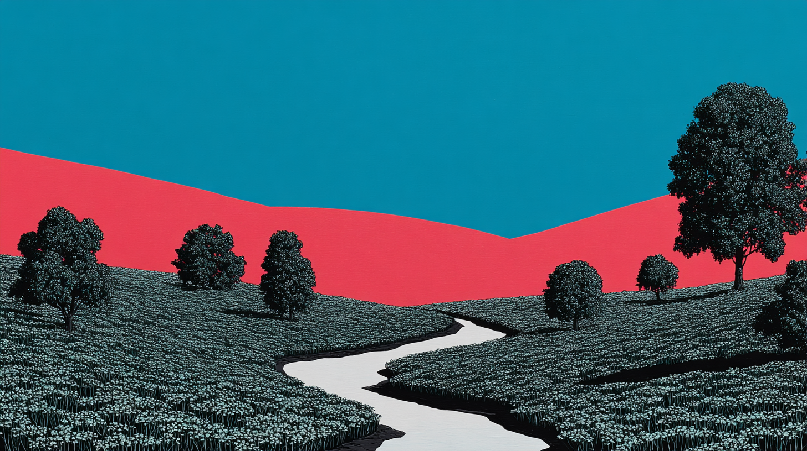
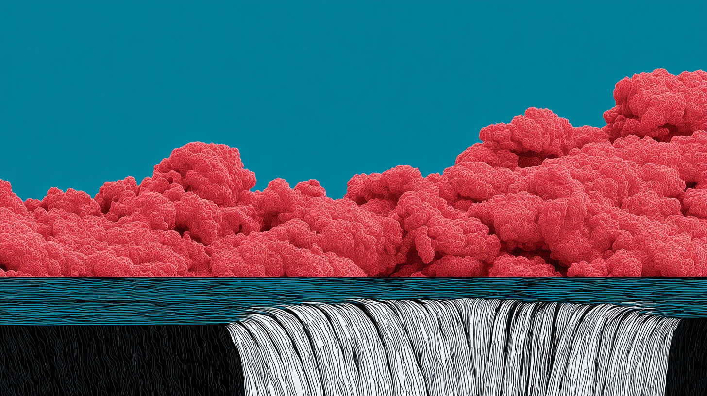

Positioning System
Same HTML, different layouts. Just change a data attribute.
Text Alignment
data-align="start | center | end"
Left-aligned text.
Centered text.
Right-aligned text.
data-layout="center"
Centered Layout
All content is centered horizontally with a max-width constraint. Great for hero sections, CTAs, and focused content.
data-layout="left"
Left Layout
Content aligned to the start. This is the default reading pattern for most content. The content has a max-width to maintain readability.
data-layout="right"
Right Layout
Content aligned to the end. Useful for visual variety or alternate sections. Text still reads left-to-right.
data-layout="split"
Split Layout
Two equal columns. First child on left, second on right. Automatically stacks on narrow screens.

data-layout="split-reverse"
Split Reverse Layout
Same as split, but media appears on the left. HTML order stays logical (content first), CSS handles visual order.

Content Width Control
data-width="narrow | default | wide | full"
Max-width: 32rem (512px)
Max-width: 48rem (768px)
Max-width: 64rem (1024px)
Gap Control
data-gap="none | sm | md | lg | xl"
data-padding="sm"
Small Padding
data-padding="lg"
Large Padding
Combined: data-layout="center" data-padding="xl"
Hero Section Example
This demonstrates combining layout and padding attributes. The content is centered with extra vertical padding.
Combined: split + stack + custom gaps
Feature Section
Nesting layouts works naturally. This outer section uses split, while the content uses stack for vertical flow.
- Clean semantic HTML
- CSS handles all positioning
- Change layout with one attribute